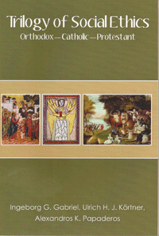

<body bgcolor="#FFFFFF" text="#000000" link="#0000FF" vlink="#CC0000" alink="#CC0000"><center><hr width="350" size="1" align="center" noshade><hr width="350" size="1" align="center" noshade><p><a href="https://cdcshoppingcart.uchicago.edu/Cart/ChicagoBook.aspx?ISBN=9780931214165&&PRESS=temple" target="_top">Buy this book!</a> | <a href="https://cdcshoppingcart.uchicago.edu/Cart/Cart.aspx?PRESS=temple" target="_top">View Cart</a> | <a href="https://cdcshoppingcart.uchicago.edu/Cart/Cart.aspx?PRESS=temple" target="_top">Check Out</a></p><p></p></center><!--none//--><h1>Trilogy of Social Ethics</h1>
<H2>Orthodox - Catholic - Protestant</H2>
<h3>Ingeborg G. Gabriel, Ulrich H.J. K�rtner and Alexandros K. Papaderos</h3>
<P>paper 0-931214-16-5 $25.00, <FONT COLOR=#990033>Available</FONT>
<BR> 320 pp
6x9
</P><BLOCKQUOTE><I>"0ur world today is in dire need of a shared Christian ethic of service and love for all humanity. This important book provides the catalyst for us to learn, to speak, to ponder, and to find a common voice. It is a new starting point for ecumenical understanding and modeling unity to institutions of learning."</I>
<br>&#151<b>Emmanuel Adamakis</b>, Greek Orthodox Metropolitan of France & President of the Conference of European Churches<I></I></BLOCKQUOTE>
<h2>Reviews</h2>
<p><I>"First published in German, this English translation has a twofold aim: first, it is an introduction to the social ethical thinking of the three major Christian traditions; second, it demonstrates that the different approaches complement each other � while at the same time providing ample material for clarifying various issues within each of the traditions and among them. In this way the book takes an important step toward enhancing ecumenical cooperation in ethical responsibilities in society, mapping out common ground for practical cooperation."</I>
<br>&#151<b>Kurt Cardinal Koch</b>, President of the Pontifical Council for Promoting Christian Unity
<p><I>"This volume takes a long view of the European condition, rather than addressing the contemporary crisis. The authors unfold three pathways of Christian moral reasoning that shape Christian approaches and responses to the needs of any time or place. In this way, Christian social ethics as presented in the chapters on Orthodox, Catholic, and Protestant thought are shown to be relevant to a wide variety of contexts. Thus, the English translation of this textbook provides an excellent resource for all scholars and students of social ethics."</I><br>&#151<b>Rev. Dr. Olav Fykse Tveit</b>, General Secretary, World Council of Churches
<BR>&nbsp;<H2>About the Author(s)</H2>
<P><b>Ingeborg G. Gabriel</b> (Catholic) serves as Chair of the Department of Social Ethics and Vice-Dean of the Faculty of Roman Catholic Theology at the University of Vienna, Austria.</P>
<P><b>Ulrich H.J. K�rtner</b> (Protestant) serves as Full Professor of Systematic Theology and Chair of the Institute for Systematic Theology and Religious Studies at the Faculty of Protestant Theology at the University of Vienna, Austria.</P>
<P><b>Alexandros K. Papaderos</b> (Greek Orthodox) is co-founder of the Orthodox Academy of Crete (OAC) and was its General Director for 1963 to 2008. Papaderos is a full member of the European Academy of Sciences and Arts, Archon of the Patriarchate of Constantinople, and recipient of numerous honors for his work.</P>
<BR><H2>Subject Categories</H2>
<p><A HREF="/tempress/religion.html" TARGET="_top">Religion</a>
</p>
<p align="center"><a href="https://cdcshoppingcart.uchicago.edu/Cart/ChicagoBook.aspx?ISBN=9780931214165&&PRESS=temple" target="_top">Buy this book!</a> | <a href="https://cdcshoppingcart.uchicago.edu/Cart/Cart.aspx?PRESS=temple" target="_top">View Cart</a> | <a href="https://cdcshoppingcart.uchicago.edu/Cart/Cart.aspx?PRESS=temple" target="_top">Check Out</a></p><p><font face="Arial" size="1"><a href="copyright.html" onMouseOver="window.status='Web Copyright Policy';return true;" onMouseOut="window.status=''" title="Web Copyright Policy">&copy;</a> 2015 <a href="http://www.temple.edu" target="new" onMouseOver="window.status='Link to Temple University home page';return true;" onMouseOut="window.status=''" title="Link to Temple University home page">Temple University</a>. All Rights Reserved. http://www.temple.edu/tempress/titles/trilogy_reg.html</font></p>